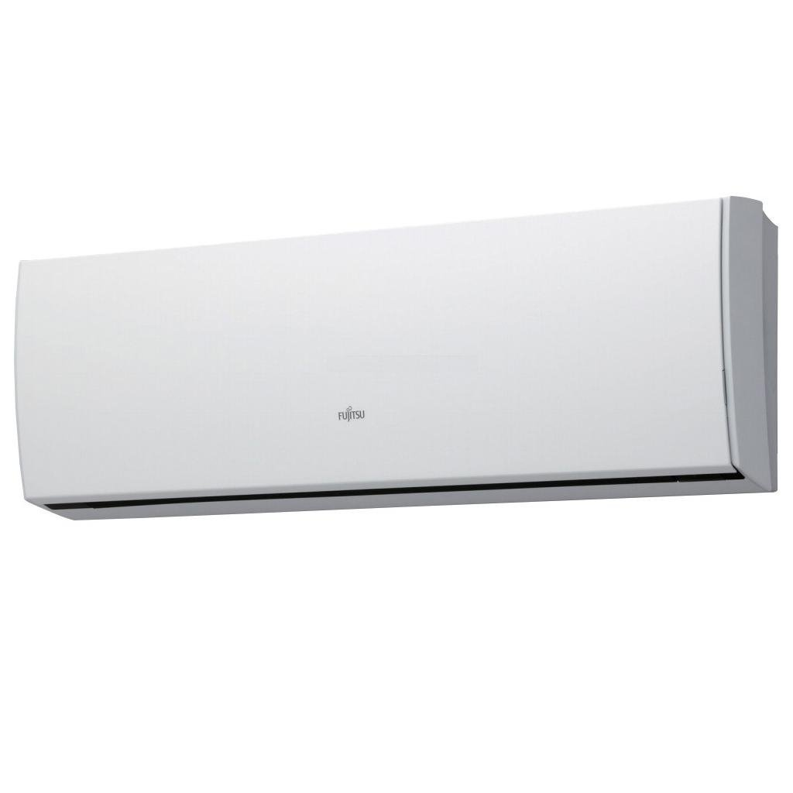

Blokeliai | Sienoms ir pertvaroms | | Lemora
- Blokeliai | Sienoms ir pertvaroms | | Lemora
UAB "Anaga". Kodas: 300869685. PVM mokėtojo kodas: LT100003421411. Kauno g. 36, LT-03202, Vilnius. Telefonas: +370 5 213 1187. - MAITINIMO BLOKAI (PSU) virš 790 modelių Žema kaina | Varle.lt
Praėjimo kontrolė šiandien tampa būtina apsauga ofisams ir daugiabučiams. Šiandien tiesiog būtina apriboti pašalinių asmenų patekimą į patalpas. Taip pat turime įvairių sprendimų, jeigu norite kontroliuoti darbuotojų patekimą į darbo vietą. Praėjimo kontrolės sistemos puikiai apsaugo parkingus nuo vagių patekimo. - Vidiniai sieniniai blokai – Sanlėja
Sisteminiai blokai. Informuojame, kad šioje svetainėje naudojami slapukai (angl. cookies). Paspaudę mygtuką „Sutinku“ arba naršydami toliau patvirtinsite savo sutikimą. - Keramzitinis Fibo pamatinis blokelis - Lemora
Operacinės sistemos (OS) serveriams ir kitos programos. Serverių laidai. Duomenų saugyklos (NAS) Duomenų saugojimo sistemos (NAS) ... Maitinimo blokai. Filtruoti pagal. Filtras. Kaina, maž. - didž. Aktualumas Pavadinimas, A - Z Pavadinimas, Z - A Kaina, maž. - didž. ... - Vidiniai sieniniai blokai | Produkto kategorijos ...
Kontaktai UAB "Sanlėja" info@sanleja.lt +3706 900 0002 Kuršių g. 2, LT-03153, Vilnius Sandėlis: Sausupio g. 15, LT-02301, Vilnius Įmonės kodas: 304126864 - Maitinimo sistemos ir blokai | dominga.lt
Blokeliai - dažniausiai namų sienų ir pertvarų statybai naudojama statybinė medžiaga. Statant namą tai vieni iš svarbiausių pirmųjų pasirinkimų. Blokai pasižymi geromis garso ir šilumos izoliacijos bei tvirtumo savybėmis. Populiariausi – silikatiniai, keramzitbetonio, keramikiniai, dujų silikatiniai ar akyto betono blokeliai. - AlpicAir sieniniai vidaus blokai | AlpicAir Multi sistemos ...
Vidiniai sieniniai blokai +370 601 86 366. info@specdarbai.lt. specdarbai.lt > Produktai > Oro kondicionieriai > Multi Split sistemos > Vidiniai sieniniai blokai. Rūšiuoti pagal: Kategorijos: ... - Išoriniai blokai – Sanlėja
VRF sistemos Nuolatinės srovės ventiliatorių varikliai ... Asami VRF išoriniai blokai gali dirbti įtampos ribose 342 V – 456 V . Asami Mini VRF blokai gali veikti įtampos ribose 185 V – 264 V . Valdymo plokštės apsauga. Naudojant unikalų dizainą pasiekta, kad valdymo skydas būtų nepralaidus dulkėms, vandeniui, dulkėms bei ... - Maitinimo blokai - Tera Pro
Fibo pamatų blokai gali būti naudojami bet kuriuo metų laiku. Galimybė formuoti lenktas konstrukcijas. Viena ekonomiškiausių sistemų. MONTAVIMAS: Įrengiant pamatus – blokelių mūryti nereikia! Sudedami vienas ant kito. Rekomenduojame naudoti C16/20 stiprio klasės betoną, kai statomi vieno – dviejų aukštų namo pamatai. - VRF Išoriniai blokai - Asami
Maitinimo sistemos ir blokai . CTR* CTR* - Hidraulinis maitinimo blokas. Plačiau... Hidraulinės sistemos ir kolektoriai . Duplomatic Oleodinamica projektuoja ir gamina hidraulinius kolektorius bei sudėtingas sistemas, pritaikytas visiems sektoriams. Daugiau informacijos šia ...
I-V 8:00-17:00 +370 638 22222 Kontaktai Pristatymas Prisijungti / Registruotis PRISIJUNGTI Facebook Google
Neturite paskyros?
REGISTRUOTIS Prisijungti / Registruotis 0 Krepšelis 0,00 €Prekių nėra
Bendra suma: 0,00 €Pirkti
XPrekė sėkmingai įdėta į krepšelį
Tęsti apsipirkimą PirktiPrekių katalogas
Izoliacija, sandarinimas Šilumos, garso izoliacija Putų plokštės Mineralinė vata Putstiklis Techninė izoliacija Keramzitas Sandarinimo medžiagos Putos Klijai Hermetikai Juostos, pistoletai, valikliai Izoliacinės plėvelės Difuzinės plėvelės Antikondensacinės plėvelės Garo izoliacinės plėvelės Vėjo izoliacinės plėvelės Statybinės plėvelės Hidroizoliacijos priemonės Mišiniai Mastika, gruntas, chemija Membrana, geotekstilė Juostos, plėvelės Mišiniai, dažai, gruntai Statybiniai mišiniai Plytelių ir kiti klijai Tinkai Mūro, grindų mišiniai Hidroizoliaciniai mišiniai Cementas, betonas ir kt. Gipsiniai mišiniai Stiklo audinio tapetai Statybiniai gruntai Giluminiai gruntai Gruntai neįgeriantiems paviršiams Gruntai prieš dekoratyvinį tinką Statybiniai dažai Dažai išorės darbams Dažai vidaus darbams Statybiniai glaistai Cementiniai glaistai Gipsiniai glaistai Polimeriniai glaistai Statybinė chemija Pelėsiams ir samanoms naikinti Valikliai klinkeriui Plastifikatoriai, priešaltiniai priedai Gipso kartonas, profiliai Gipso kartono plokštės Reviziniai liukai Profiliai Montavimo priedai Stogo danga, priedai Stogo dangos Šiferis Betoninės čerpės Keramikinės čerpės Plieninė danga Bituminės čerpės Prilydoma danga Skalūnas Fibrocementinės plokštelės PVC dangos Apkrovas laikantys lakštai (paklotas) Šlaitinio stogo priedai Tvirtinimo elementai Sandarinimo elementai Saugos elementai Ventiliacijos elementai Lietaus vandens surinkimo sistemos Plokščio stogo priedai Kaminų sistemos Kaminų komplektai Isokern kamino sistema Ventiliaciniai blokeliai Kamino sistemos priedai Blokai, plytos, aplinka Blokai, plytos, tinklai Blokeliai Statybinės plytos Tinklai, mūro aksesuarai Trinkelės Vandens ir purvo surinkimo sistemos Fasado apdaila Klinkerinės plytelės Statybinės plokštės OSB plokštės Drėgmei atsparios plokštės Cementinės plokštės Klinkerinės plytos Tinkuojamas fasadas Struktūrinis tinkas Klijavimo, armavimo mišiniai Profiliai, smeigės, priedai Cementinės dailylentės Vėdinamas fasadas Fibrocementinės plokštės Aliuminio kompozito plokštės Akmens masės plytelės Karkasas Lubos, pertvaros, grindys Pakabinamos lubos Mineralinės lubos Metalinės lubos Gipsinės lubos Išskirtinio dizaino lubos Konstrukcijos, priedai Grindų dangos, įrengimas Šviestuvai Virštinkiniai šviestuvai Įleidžiami šviestuvai Pramoniniai šviestuvai Avariniai šviestuvai Modulinės pertvaros Stoglangiai, priedai Stogo langai Užuolaidėlės, žaliuzės Stogo liukai Palėpės laiptai Tarpinės, izoliacija Įrankiai, lipni juosta, varžtai Darbo saugos priemonės Dažymo, glaistymo, tinkavimo Priedai, detalės, kiti Varžtai, savisriegiai, medsraigčiai Lipnios juostos MONTAVIMO DARBAI SISTEMOS GAMINTOJAI Lemora Blokai, plytos, aplinka Blokai, plytos, tinklai BlokeliaiBlokeliai
FILTRAI:
Valyti filtrus
Kraunama...
Žiūrėti tik:
Prekių viso 1 - 15 / 15 ArkoBlokelis silikatinis Arko M
Vidutinis stiprumas gniuždant 10÷17,5 Mpa Aukštis 195 mm Ilgis 340 mmPadėklai yra gražinami, jų vertė bus pridėta prie sąskaitos rankiniu būdu. Tvarkingus padėklus galite grąžinti net per 60 kalendorinių dienų. Vilniuje grąžinti adresu Savanorių pr. 124, Vilnius Norite gauti specialią kainą? Spauskite mygtuką "Teirautis"
0,00 € VNT. Pristatymas 2-21 d.d* Gamintojo sandėlyje TEIRAUTIS LodeKeraminiai blokeliai Keraterm, 380mm, Lode, Latvija
Sandėlio valymas!!!Keraterm 38 naudoja atraminių išorinių sienų statybai (su šilumine izoliacija arba be jos) Sienos storis = 38 cm Stipris gniuždant = 12,5 N/mm2 Šilumos laidumo koeficientas = 0,13 W/mK Garso izoliacija = 48 dB Tūrio svoris = 0,76 g/cm3 Išmatavimai 250x380x238 Kiekis ant paletės 72 vnt. 16,81 vnt/m2
2,11 € 1,33 € VNT. Pristatymas 2-21 d.d* Gamintojo sandėlyje TEIRAUTIS LodeKeraminiai blokeliai Keraterm, Lode, Latvija
Iš Keraterm blokelių sumūrytos sienos kvėpuoja: per karščius jos išlaiko namuose malonią vėsą, o staigiai nukritus lauko temperatūrai, ilgą laiką išlaiko patalpose šilumą. Perkant pilną mašiną tiesiai iš gamyklos pristatymas nemokamas! (be iškrovimo paslaugos) Norite gauti specialią kainą? Spauskite mygtuką "Teirautis"
0,00 € VNT. Pristatymas 2-21 d.d* Gamintojo sandėlyje TEIRAUTIS WienerbergerKeraminiai blokeliai Porotherm, Wienerberger
Keraminiai blokeliai Porotherm – pastato ilgaamžiškumo garantas! Perkant pilną mašiną tiesiai iš gamyklos pristatymas nemokamas! (be iškrovimo paslaugos)Norite gauti specialią kainą? Spauskite mygtuką "Teirautis"
0,00 € VNT. Pristatymas 2-21 d.d* Gamintojo sandėlyje TEIRAUTIS WienerbergerPorotherm sąrama
Sąramas Porotherm ir blokų mūrą paprasta derinti. Dėl skirtingo medžiagų šilumos išsiplėtimo, išnyksta galimybė atsirasti trūkiams.
10,49 € VNT. Pristatymas 2-21 d.d* Gamintojo sandėlyje TEIRAUTIS FiboKeramzitbetonio blokeliai Fibo Proof 3MPA
Naujos kartos Fibo blokeliai, skirti A ir A+ klasės pastatams.Blokeliai parduodami kartu su padėklu, kurio vertė bus pridėta prie sąskaitos rankiniu būdu. Vadybininkas, gavęs užsakymą, informuos apie galutinę sumą. Tvarkingi padėklai grąžinami per 60 k.d. Perkant pilną mašiną (tiesiai iš gamyklos) pristatymas nemokamas! Apie papildomas sąlygas
0,00 € VNT. Pristatymas 2-21 d.d* Gamintojo sandėlyje TEIRAUTIS FiboKeramzitinis Fibo pertvarinis blokelis 88x498x198
10 vnt/m2100vnt/palSvarbu: padėklai yra gražinami, jų vertė bus pridėta prie sąskaitos rankiniu būdu. Kiekvieną kartą apie tai informuos vadybininkas asmeniškai. Tvarkingi padėklai grąžinami per 60 kalendorinių dienų. Perkant pilną mašiną (tiesiai iš gamyklos) pristatymas nemokamas! Apie papildomas sąlygas
0,00 € VNT. Pristatymas 2-21 d.d* Gamintojo sandėlyje TEIRAUTIS FiboProfilis Omega Fibo pertvariniams blokeliams 3000mm
Storis 1 mm Naudojamas su Fibo pertvariniasm blokeliais
7,99 € VNT. Pristatymas 2-7 d.d* Turime sandėliuose ( 142 vnt.) ŽIŪRĖTI FiboKeramzitinis Fibo pamatinis blokelis
Montuojant nereikalinga sunkiasvorė kėlimo technika Fibo pamatų blokai gali būti naudojami bet kuriuo metų laiku Galimybė formuoti lenktas konstrukcijas Įrengiant pamatus – blokelių mūryti nereikia
1,42 € VNT. Pristatymas 2-7 d.d* Turime sandėliuose ( 1533 vnt.) ŽIŪRĖTI FiboLengvoji Fibo sąrama
Fibo sąrama - tai viduje armuotas keramzitbetonio gaminys, skirtas iki 2,5 m pločio angų perdengimui.Svarbu: padėklai yra gražinami, jų vertė bus pridėta prie sąskaitos rankiniu būdu. Kiekvieną kartą apie tai informuos vadybininkas asmeniškai.
20,72 € VNT. Pristatymas 2-21 d.d* Gamintojo sandėlyje TEIRAUTIS FiboBlokeliai Fibo U forma, keramzitbetonio, sąramoms, 4MPa, 200-300mm
Naudojamas greitam betoninio žiedo įrengimui bei sąramų virš langų, durų ar angų įrengimui.
2,32 € VNT. Pristatymas 2-7 d.d* Turime sandėliuose ( 7 vnt.) ŽIŪRĖTI BaurocBlokeliai Bauroc ECOLIGHT, akyto betono, 2.5MPa, 100-150mm
Užsakant pilną mašiną (32 paletes) blokelių, siūlome specialią kainą ir nemokamą pristatymą! - Blokelius vežame tiesiai iš gamyklos, tad nemokamai pristatome tik jį. - Iškrovimo paslauga neteikiama. - Galima komplektuoti skirtingo pločio blokelius (pilnomis paletėmis). Šių užsakymų laukiame eprekyba@lemora.lt arba +370 638 22222
0,00 € VNT. Pristatymas 2-21 d.d* Gamintojo sandėlyje TEIRAUTIS BaurocBlokeliai Bauroc UNIVERSAL, akyto betono, 2.5MPa, 250-300mm
Užsakant pilną mašiną (26 ar 32 paletes) blokelių, siūlome specialią kainą ir nemokamą pristatymą!- Blokelius vežame tiesiai iš gamyklos, tad nemokamai pristatome tik jį.- Iškrovimo paslauga neteikiama. - Galima komplektuoti skirtingo pločio blokelius (pilnomis paletėmis). Šių užsakymų laukiame eprekyba@lemora.lt arba +370 638 22222
0,00 € VNT. Pristatymas 2-21 d.d* Gamintojo sandėlyje TEIRAUTIS BaurocBlokeliai Bauroc ELEMENT, akyto betono, pertvaroms, 3MPa, 50-150mm
Užsakant pilną mašiną (25 paletes) blokelių, siūlome specialią kainą ir nemokamą pristatymą!- Blokelius vežame tiesiai iš gamyklos, tad nemokamai pristatome tik jį.- Iškrovimo paslauga neteikiama. - Galima komplektuoti skirtingo pločio blokelius (pilnomis paletėmis). Šių užsakymų laukiame eprekyba@lemora.lt arba +370 638 22222
0,00 € VNT. Pristatymas 2-21 d.d* Gamintojo sandėlyje TEIRAUTIS SimprasBlokelis silikatinis Siliblokas
0,00 € VNT. Pristatymas 2-21 d.d* Gamintojo sandėlyje TEIRAUTIS
Blokeliai - dažniausiai namų sienų ir pertvarų statybai naudojama statybinė medžiaga. Statant namą tai vieni iš svarbiausių pirmųjų pasirinkimų. Blokai pasižymi geromis garso ir šilumos izoliacijos bei tvirtumo savybėmis. Populiariausi – silikatiniai, keramzitbetonio, keramikiniai, dujų silikatiniai ar akyto betono blokeliai. Internetinės parduotuvės Lemora.lt asortimente kiekvienas meistras ras labiausiai jo lūkesčius atitinkančius statybinius blokelius.
Profesionalus
konsultavimas
Pristatymas
visoje Lietuvoje
Kokybiškų medžiagų
asortimentas
Prekių grąžinimo
garantija
INTERNETINĖ PARDUOTUVĖ
eprekyba@lemora.lt +370 638 22222I-V 8:00-17:00 val.
PASLAUGOS
Pakabinamų lubų montavimas Pakeliamų grindų montavimas Grindų liejimas Šlaitinis stogas Tinkuojamas fasadas Pramoninė statybaPERKANTIEMS INTERNETU
Pristatymas Atsiskaitymas Grąžinimas ir garantija Pirkimo taisyklės Privatumo politikaVERTA ŽINOTI
Apie įmonę Kontaktai Lemora.lt naudoja slapukus, kurie užtikrina sklandų apsipirkimą. Paspaudę „Sutinku“ arba toliau tęsdami naršymą svetainėje Jūs sutinkate su slapukų naudojimu. Savo sutikimą galėsite atšaukti bet kuriuo metu. Sutinku Daugiau informacijos© LEMORA. Visos teisės saugomos. Be sutikimo draudžiama kopijuoti ir platinti svetainėje esančią informaciją.
